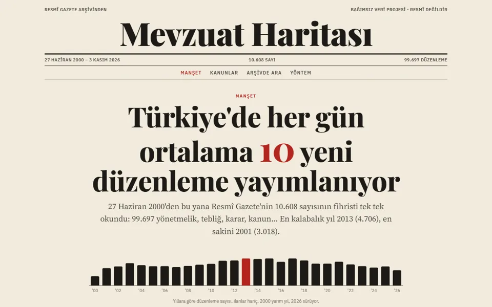
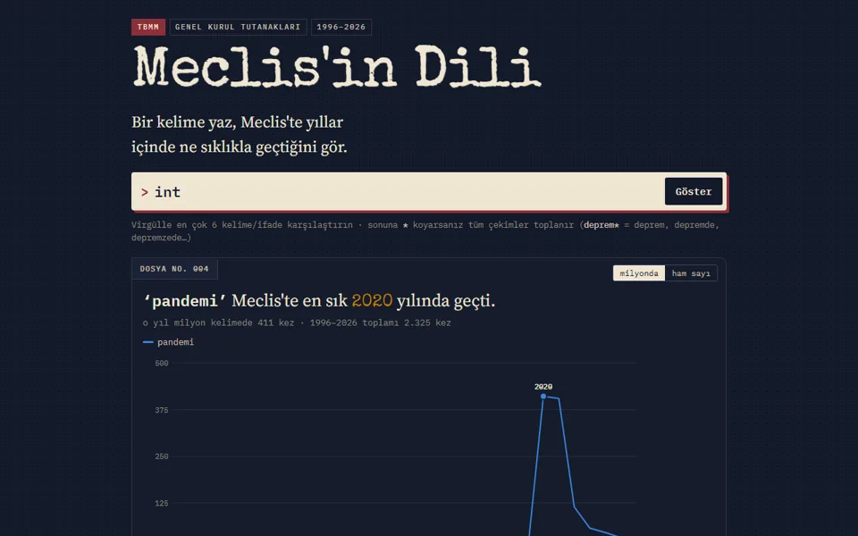
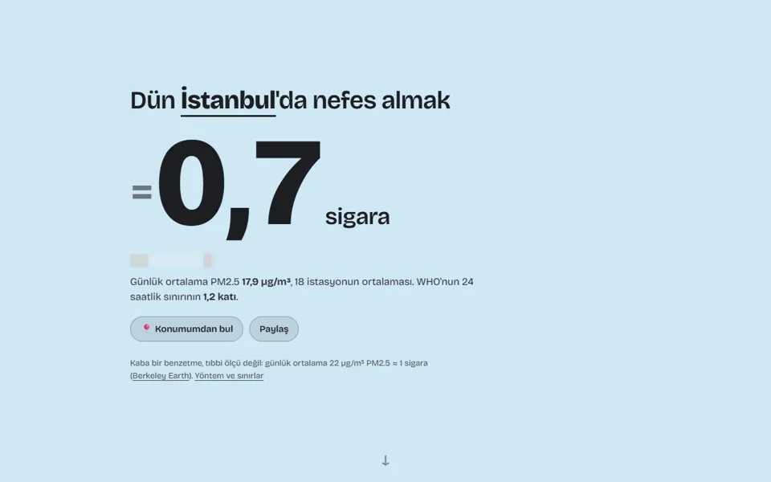
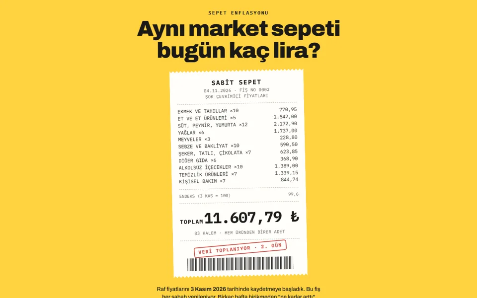
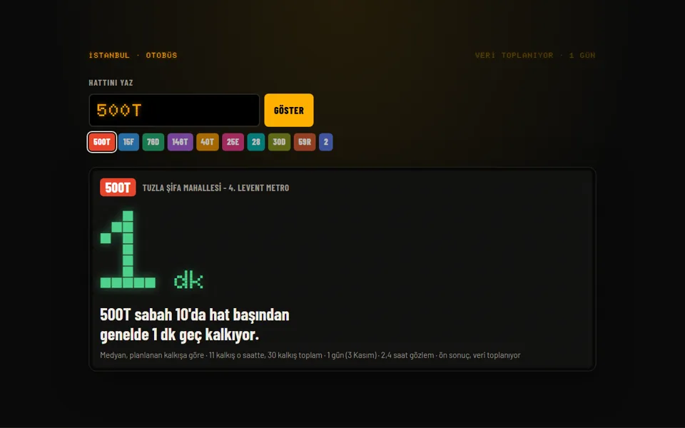

Sonra ölçüyorum. İşe yaramadıysa onu da yazıyorum. Aşağıda 19 proje var. Beşi şu an internette canlı, üçü her gün kendini güncelliyor.
Her biri tek bir soruyu cevaplıyor ve her biri kendi kimliğiyle tasarlandı. Kaynak, yöntem ve sınırlar her sitenin altında yazıyor.
2000'den bugüne 10.608 Resmî Gazete sayısı, 99.697 düzenleme. Hangi kanun kaç kez değişti, doğduğun gün ne yayımlandı?

Bir kelime yaz, TBMM'de 1996'dan bu yana yıl yıl ne kadar konuşulduğunu gör. 3.731 birleşim, 69 milyon kelime. Yorum yok, yalnızca sayılar.

3 Kasım'da İstanbul'da nefes almak. Bakanlığın 210 istasyonundan il il PM2.5, kaba ama akılda kalan bir benzetmeyle.

Kendi sepetini kur, kendi enflasyonunu TÜFE'yle yan yana gör.

Hattını yaz: otobüsün planına ne kadar uyuyor? İETT'nin canlı konum verisinden, dakikada bir.

Yapay zekâ deneyleri, aileme ve tanıdıklarıma yaptığım uygulamalar, oyunlar. Her kartta neyi yaptığım ve gerçekte ne çıktığı yazıyor; damga sonucu özetliyor.
Deneylerimin bir kısmı işe yaramadı. Ama her birinde "neden" sorusunun ölçülmüş bir cevabı var, ve bence en çok şeyi bunlardan öğrendim.
Her proje tek bir cümleyle başlıyor: "Bugün nefes almak kaç sigara?" Cevaplamayan özellik eklenmiyor.
Gizli testler, elle denetlenmiş örneklemler, güven aralıkları. Sayı yoksa iddia da yok.
Annem ve babam için oyun uygulaması, eniştem için tişört atölyesi, esnaf için site. 70 yaşında biri de kullanabilmeli.